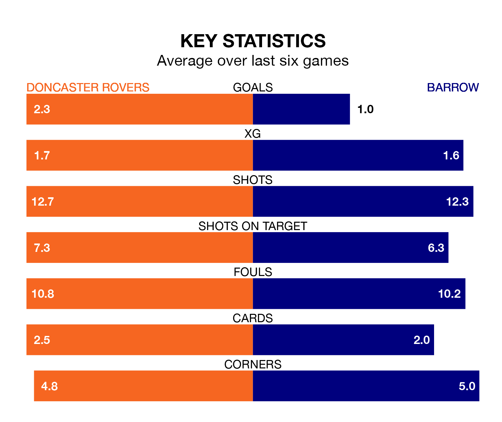

Doncaster Rovers host Barrow at the Eco-Power Stadium on Saturday on the back of eight consecutive wins in EFL League Two.
It means Doncaster have picked up the maximum 24 points from their last eight games, and they face a Bluebirds side who drew their last match, and have collected nine points from the last possible 24.
With Paul Farman between the sticks, Barrow can rely on one of the league's safest pair of hands. He has kept 14 clean sheets in his 41 appearances this season, and only two other 'keepers – Stockport County's Ben Hinchiffe and AFC Wimbledon's Alex Bass – have been able to prevent the opposition scoring on more occasions in EFL League Two.
In Doncaster's net, Thimothee Lo-Tutala has seven clean sheets in 15 games.
With 58 goals in 43 games so far this season, the Bluebirds are scoring at below the league average rate with 1.3 goals per game. But they are conceding fewer than average too, letting in 49 goals at a rate of 1.1 per game.
Rovers, meanwhile, are average scorers, with 1.5 goals per game. They have also conceded 1.5 goals per game.
The away side are sixth in the table after 43 games, of which they have won 18 and drawn 14, earning 68 points.
The Rovers are three places behind Barrow in ninth, with 19 wins and seven draws putting them on 64 points.
In the last three years, Doncaster and Barrow have played each other on three occasions. Doncaster won one of them and Barrow the other.
Their last meeting was on September 30, when Barrow won 3-2 at home.
Doncaster's last match was on April 13, a 4-0 win against Accrington Stanley, with Hakeem Adelakun, James Maxwell, Joe Ironside and Owen John Edward Bailey getting the goals for the Rovers.
Barrow drew 1-1 with Crawley Town last time out, on Tuesday, with Emile Acquah on the scoresheet.
Saturday's match will be refereed by Carl Brook, who has taken charge of 11 EFL League Two games so far this season, issuing one red card and booking 48 players. He has not awarded any penalties.
He is yet to oversee a match featuring either Doncaster or Barrow this season.
Updated: 15:40 (UTC), 18/04/24